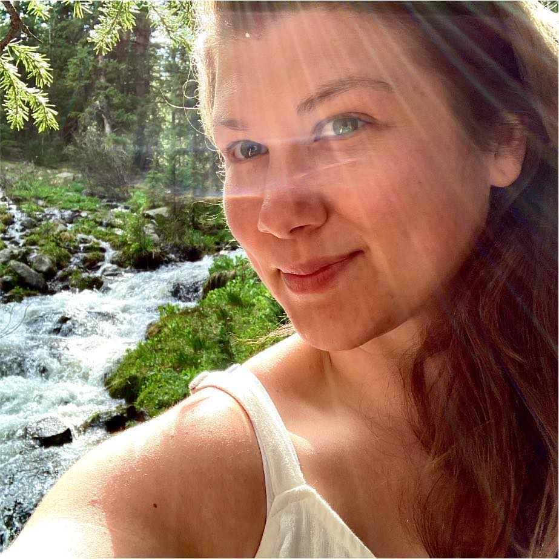

About

My name is Jennifer Marcussen. I was born and raised in Grand Rapids, Michigan, and currently reside in Northern Michigan. I earned my first BFA from Kendall College of Art and Design in 2015 with a focus in Sculpture and Functional Art. I returned to Kendall and earned my second BFA with a focus in Graphic Design in 2017. I am a citizen of the Pokagon Band of Potawatomi tribe. My inspiration comes from my culture, where I am rooted to this land through gratitude and stewardship. What drives me the most as an artist is providing an unforgettable experience for the viewer. I have a passion for thinking out of the box and a love of process. I love when a viewer can walk around and experience artwork in dimension.